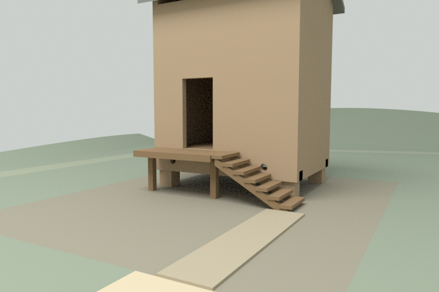
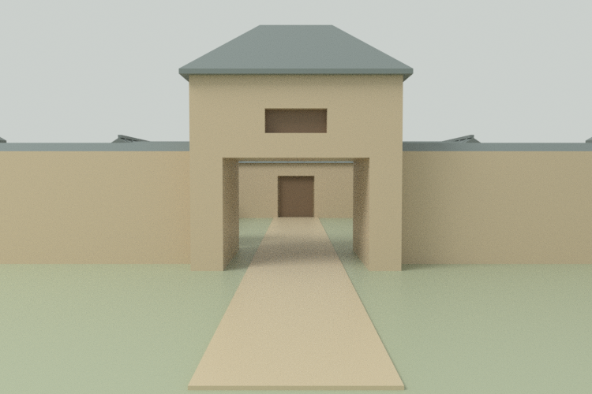
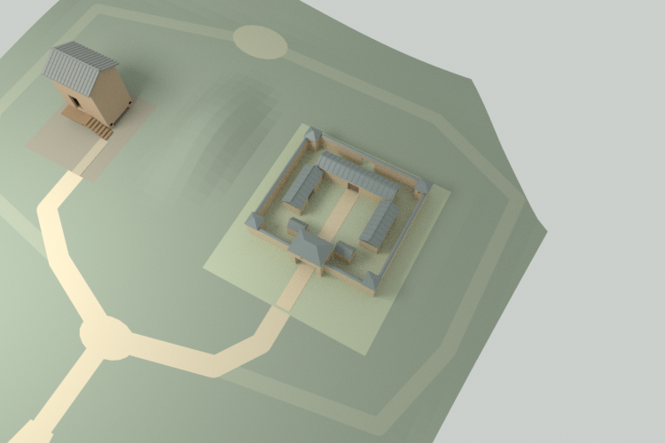
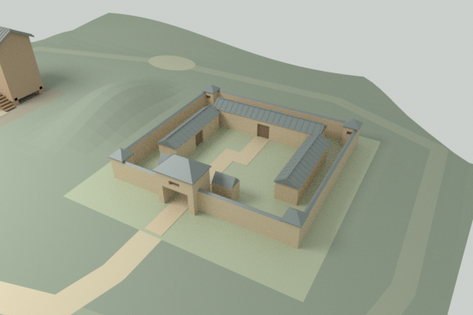

空间不是背景
目标不是把两个旋转模型放大，而是让选路、接近与抬升改变可见关系。
开放与围合
012高仓与013低院来自不同地域年代。这里把它们置于当代中性比较试验场，不声称是复原村落。
同一路径，两次观察
入口先辨高低轮廓，分岔到仓前或院门。低仓读梯廊；低院透过门洞看路径。抬升才理解院内屋与外墙之间的间隙，再从外缘回望。
让接近真正发生
首版只有全局高位安全相机，不能兑现接近。修订增加入口、仓前与院门固定低位，仅有限转向；不是角色自由行走。仓前近观有意裁切仓顶，随时可全景恢复。默认入口从路面前看岔口与屋顶，完整地景俯瞰改为用户主动选择。
一个连续场地
原GLB形状不改。新地形用精确浅槽齐平承接原地台，路线切入地形材质分区而非重叠贴片；变换和输入哈希随源包保留。
高低位的可见差异



原作者对标
Bruno Simon本人空间作品的官方说明将移动、交互、地图与归位组成完整行动体系。本轮借鉴的是可恢复的空间导航，不复制车辆、物理或资产；仅核对页面文字，未声称GPU游玩。
Anya Jo Elvidge本人战役地图作品核对了建筑/聚落与地图布置的作者来源。作为美术比较，不背书历史构造或玩法性能。
另一组真实几何能否迁移？
用较宽、偏门的013 B替换A，直接套旧孔槽失败：实际环境三角裁切测得11.5立方原创单位交叠。同一生成器改读真实B地台与门轴，重算孔槽、接近路线与观察位后，限定组合通过接触和镜头检查；默认A重建GLB逐字节不变。

验证边界
- CPU：环境闭合、精确地台接口、实际GLB有向三角一致；高位投影及低位近面/下降段有限样本。
- 运行时逻辑：实际应用代码在明确假DOM/渲染器中检查取消、迟到资源、快速选路、回退、重试和资源释放。
- 真实云浏览器：无GL备用、帮助/焦点、重试、窄屏、极小视口与无脚本可读性。
- 未验证：主体验GPU渲染、动态闪烁、真实触屏、帧率、连续全域碰撞、万点位SLG、用户理解效果。
空间原型与公开可访问是两件事。CPU图是静态证据，不是实时截图。机构原图与私有日志不随包发布。